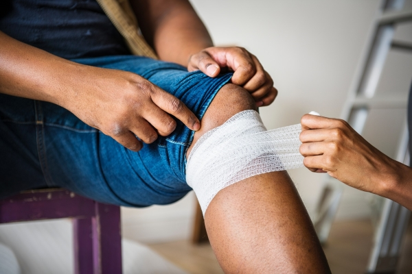
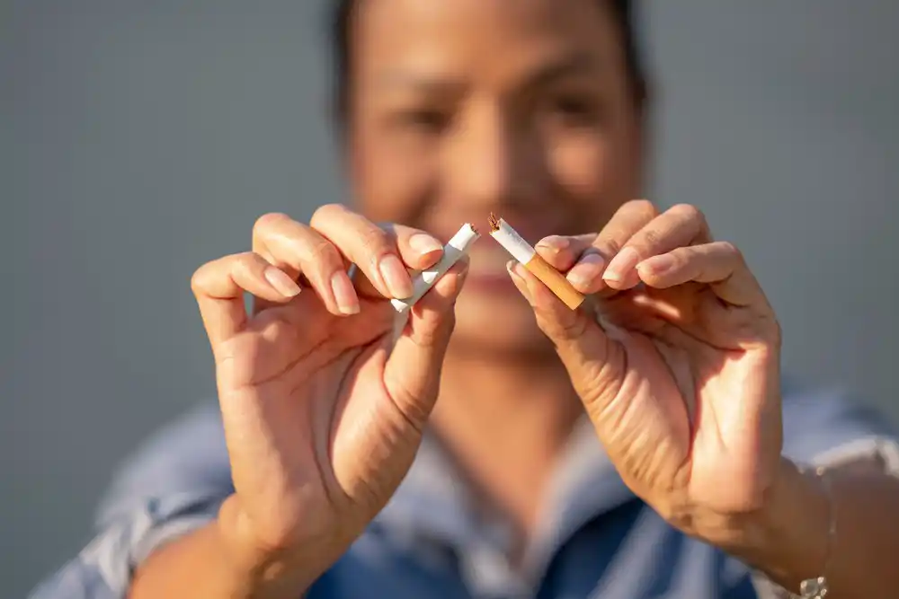
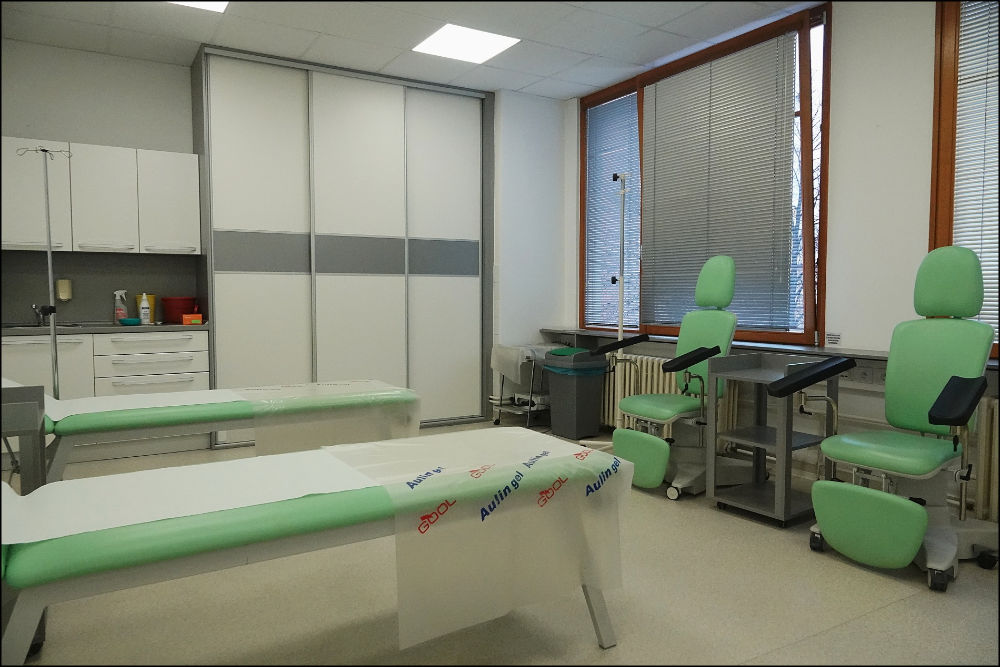

Naše služby pro Vaše zdraví
Naše zdravotnické zařízení nabízí široké spektrum služeb přizpůsobených potřebám našich pacientů. Na této stránce najdete všechny důležité informace.

Odběry krve se provádí na sesterně mezi 6-8 hodinou ráno.
Nemusíte se objednávat na předem domluvené nebo pravidelné odběry včetně preventivní prohlídky. Neplánované odběry je nutné zkonzultovat!
Po vstupu do čekárny se nahlásíte ve vyvolávacím systému kartičkou pojišťovny, zvolíte odběry a vyčkáte vyvolání.
- Krev - odběr krve se provádí nalačno po min 8 hodinové lačnění (odběry krevních tuků, cukru, preventivní prohlídka). Před odběrem není vhodná fyzická aktivita a před odběrem doporučujeme vypít ¼ litru čisté vody.
- Moč - odebírá se střední proud ranní moče do sterilní nádobky. Zkumavku Vám vydá dopředu sestra.
- Stěry – stěr z krku provádí lékař. Provádíme tzv. streptesty (okamžitá detekce streptokoka k ATB léčbě) a stěr k mikrobiologickému vyšetření (stěr z konečníku, kůže, hnisu, apod).
- Sputum – hlen z dýchacích test pacient vykašle do odběrové sterilní nádobky pro laboratoř ke stanovení citlivosti na antibiotika.
- Stolice – vzorek k vyloučnení parazitáního onemocněná je proveden pacientem doma do speciální nádobky, vydáné na sesterně. Perianální otisk se prování k vylouční hlístice

Smyslem preventivních prohlídek je předcházení onemocnění a jejich diagnostika, kdy Vám nezpůsobují žádné obtíže.
Účastníme se všech preventivních programů v ČR. Screening nádorů tlustého střeva, nádorů prsu u žen a nádoru prostaty u mužů. Screening rakoviny plic u kuřáků. Screening demence seniorů. Screeningu osteoporózy od roku 2023. Program detekce aneuryzmatu aorty nově pro muže od roku 2025.
Screening aneurysmatu abdominální aorty, koordinovaný Národním screeningovým centrem, vznikl ve spolupráci s předními odborníky v oblasti radiologie, angiologie a kardiovaskulární chirurgie. Jeho cílem je časné odhalení a léčba této potenciálně nebezpečné výdutě břišní aorty pomocí neinvazivního ultrazvukového vyšetření. Screeningové vyšetření bude zaměřeno na nejrizikovější skupinu pacientů, konkrétně muže ve věku 65–67 let.
Prohlídkou pravidelné zjišťujeme a hodnotíme Váš zdravotní stav, doporučujeme preventivní opatření k udržení zdraví do vysokého věku. Rozsah, frekvence a poskytovatelé zdravotních služeb, kteří provádějí preventivní prohlídky, jsou uvedeny ve vyhlášce č. 70/2012 Sb., o preventivních prohlídkách. Všeobecný praktický lékař provádí tzv. všeobecné preventivní prohlídky 1× za 2 roky, nejdříve po uplynutí 23 měsíců po poslední. Prohlídka je plně hrazena zdravotní pojišťovnou.
Na možnost absolvování hrazené preventivní prohlídky jste upozornění automaticky mailem. Objednáte se prostřednictvím portálu sestru EMMY anebo na recepci. Před termínem vyšetření je nutné bez objednání přijít lačný k odběru krve a moče nalačno mezi 6-8 hodinou ráno min 2 dny předem.
Rozsah preventivní prohlídky všeobecného praktického lékaře:
- Odběr krve k vyšetření cholesterolu (ve 30, 40, 50 a 60 letech), glykémie (od 40 let á 2 roky). Další testy v závislosti na současné léčbě, zdravotních obtížích a riziku nemoci.
- Vyšetření ranní moče chemicky z odběrové zkumavky v množství cca 50 ml.
- Natočení EKG (od 40 let á 4 roky).
- Orientační vyšetření smyslů (zraku, sluchu) se stanovením výšky a váhy se provádí na sesterně.
- Vyšetření lékařem v naší ordinaci začínáme pohovorem o zdravotním stavu (bio-psycho-sociální zdraví), aktualizujeme zdravotní dokumentaci (při léčbě specialisty, přinesete poslední lékařské zprávy), zkontrolujeme stav očkování a naplánujeme screeningové vyšetření. Následuje celkové fyzikální vyšetření (pohledem, pohmatem, poslechem, poklepem). Na závěr prohlídky jsou zhodnoceny výsledky a dáno doporučení k udržení plného zdraví.
-
Screening (metody vyhledávání nemoci, které nezpůsobují žádné obtíže):
- Nádory tlustého střeva - od 50 do 55 let – test na skryté krvácení ve stolici (i-TOKS) výsledek je znám přímo v ordinaci 1× za rok, od 55 let se pacient(ka) může rozhodnout, kterou variantu screeningu podstoupí (i-TOKS (viz výše) 1× za 2 roky nebo koloskopické vyšetření)
- Nádory prsu u žen - mamografie je hrazena zdravotní pojišťovnou od 45 let 1× za 2 roky. Vyšetření provádí akreditované screeningové centrum AGEL Diagnostické centrum Nový Jičín.
- Nádory prostaty – odběr specifické bílkoviny v krvi (PSA) ve věku mezi 50-70 lety
- Nádory plic – kuřáci, kteří splňující kritéria, jsou mezi 55-75 lety odeslání na specializované plicní vyšetření
- Screening stařecké demence u pacientů ve věku 65-80 let
- Screening osteoporózy u pacientů v riziku - odeslání na měření kostní hustoty (denzitometrii).
- Screening abdominální aorty u mužů ve věku 65-67
Pacientům vyžadující dřívější vyšetření společně s podrobnějším laboratorního vyšetření nabízíme možnost absolvovat prohlídku za přímou úhradu (viz. ceník). Laboratorní vyšetření je hrazeno zvlášť přímou fakturací spolupracující laboratoří SPADIA.
Sledování (dispenzarizace) onemocnění
Dispenzarizace je odborná lékařská péče, jejímž účelem je systematické dlouhodobé sledování stavu pacienta ohroženého nebo trpícího nemocí, s cílem předcházení zdravotním komplikacím. Prohlídky jsou prováděny nejméně 1x ročně.
Na dispenzární prohlídku se objednáte prostřednictvím portálu sestra EMMY anebo na recepci.
Prediabetes
Prediabetes předchází rozvoji cukrovky (DM) a je definován zvýšenou hladinou cukru nalačno v krvi v rozmezí 5,6-6,9 mmol/l. Diagnostika může být také provedena tolerančního testu cukru v laboratoři. Prediabetes představuje zvýšené riziko kardiovaskulárních onemocnění, a stejně jako DM je spojen s vyššími riziky onkologických nemocí. U jedince s prediabetem se obvykle vyskytuji další interní nemoci metabolického syndromu (vysoký tlak, zvýšené množství tuků v krvi, obezita). Jedná se o možný reverzibilní stav a jeho léčba je proto velmi důležitá. Základem terapie je úprava životního režimu a redukce váhy. Hladina cukru je Vám kontrolována při každé preventivní prohlídce.
Dispenzarizace se provádí 2x ročně. Před každou prohlídkou je Vám odebrána krev a stanovena váha a obvod pasu. Jednou ročně Vám provedeme celkové interní a neurologické vyšetření společně s EKG a kontrolou citlivosti chodidel ladičkou k vyloučení neuropatie.
Diabetes
Diabetes mellitus (DM, úplavice cukrová, cukrovka) je metabolické onemocnění, jehož hlavním projevem je zvýšená hladina cukru v krvi spojená s poruchou funkce hormonu slinivky břišní tzv. insulinu. Cukrovka je nebezpečná svými komplikacemi, které postihují zejména ledviny, zrak a nervou soustavu (zejména dolní končetiny). Vzhledem k dlouhodobě nepřítomným obtížím je časná diagnostika a léčba důležitá. V ČR má nemoc každý desátý a počet stále stoupá. Stav představuje zvýšené riziko infarktu a mozkové příhody a je spojen s vyšším rizikem výskytu onkologických onemocnění.
Onemocnění se projevuje hladinou cukru nalačno nad 7 mmol/l nebo při náhodném odběru nad 11 mmol/l. Hladina cukru je Vám kontrolována při každé preventivní prohlídce. Praktický lékař dává důraz na dietní a režimová opatření. Praktický lékař Vám může předepsat několik základních léků na cukrovku. Pokud léčba není dostačující jste předáni do péče specialisty diabetologa.
Pacienti s diabetem jsou v naší ambulanci sledování až 4x ročně. Před každou prohlídkou je Vám odebrána krev a jednou ročně moč. Sestry Vás zváží a změří Vám obvod pasu. Jednou ročně provedeme celkové interní a neurologické vyšetření společně s EKG a kontrolou tlaku a citlivosti dolních končetin k vyloučení ischemické choroby dolních končetin a neuropatie.
Vysoký tlak
Vysoký tlak neboli hypertenze je nejčastějším onemocněním kardiovaskulárního systému a hlavní rizikovým faktorem ischemické choroby srdeční (infarktu srdce), mozkové mrtvice, srdečního selhání, onemocnění ledvin a demence. Vysoký tlak je hlavní příčinou úmrtí lidí v globálním měřítku a trpí jím až 40% osob ve věku 25-64let. Počet nemocných stoupá. Krevní tlak je pravidelně kontrolován téměř při každé návštěvě u praktického lékaře. Optimální tlak je 120/80 mmHg a tolerance hodnot je závislá na věku a přidružených nemocech. Změřte si příležitostně Váš tlak i mimo ordinaci (viz. Doporučené postup domácího měření).
Pacienti s vysokým tlakem jsou v naší ambulanci sledování 1-4x ročně v závislosti na Vašem kardiovaskulárním riziku a kompenzaci tlaku. Jednou ročně provedeme celkové interní a neurologické vyšetření společně s EKG a krevními odběry. U těžších stavu je v pravidelném intervalu provedeno ultrazvukové vyšetření srdce (echokardiografie) kardiologem a měření tlaků krve dolních končetin k vyloučení ischemické choroby.
Dyslipidémie (zvýšený obsah tuků v krvi)
Dyslipidémie představují jeden z nejvýznamnějších rizikových faktorů aterosklerózy společně s cukrovkou, vysokým tlakem a kouřením. Tukové částice (LDL) způsobují zánět a zúžení cév, které zásobují krví životně důležité orgány. Mezi nejobávanější komplikace patří srdeční infarkt, cévní mozková příhoda a ischemická choroba dolních končetin.
V rámci preventivních prohlídek jsou Vám v pravidelných intervalech kontrolovány hladiny tuků v krvi (lipidogram). Společně s výsledky lipidogramu, hodnotou vysokého tlaku, věku a výrazného rizikového faktoru kouření je Vám vypočteno kardiovaskulární riziko rozvoje infarktu nebo mozkové mrtvice. Následně jsou Vám doporučeny preventivní a léčebná opatření (léky).
Pacienti s vysokým cholesterolem jsou v naší ambulanci sledování min 1x ročně v závislosti na kardiovaskulárním riziku a kompenzaci.
Osteoporóza (tichý zloděj kostí)
Osteoporóza je chronické onemocnění, charakterizované úbytkem kostní hmoty s rizikem zlomenin. Zlomeniny se nejčastěji vyskytují u kyčelního kloubu, v oblasti zápěstí a páteře. Stav je nejčastěji způsoben nedostatkem vápníku, vitaminu D, pohlavních (zejména ženských) hormonů a nedostatkem fyzická zátěže. Rizikové jsou zejména ženy po menopauze, osoby s nízkou tělesnou váhou a malou fyzickou aktivitou, kuřáci a konzumenti alkohol, lidé s nesnášenlivostí mléčných výrobků a některými léky (glukokortikoidy). V rámci preventivní prohlídky jste pravidelně zvážení a změření, jsou Vám analyzována rizika možné nemoci, u žen nad 50 a mužů nad 60 let je automaticky spočítáno riziko osteoporózy (FRAX skóre). Následně jste odesláni na rentgenologické vyšetření, tzv. denzitometrii. Při potvrzení osteoporózy vede praktický lékař základní diferenciální diagnostiku nemoci a také základní léčbu (suplementace vápníku, vitaminu D, léčba bisfosfonáty).
Hypothyreosa (nedostatečná funkce štítné žlázy)
Štítná žláza je orgán motýlovitého tvaru umístěný v přední části krku. Žláza produkuje hormony, ovlivňující rychlost látkové výměny organismu, spotřebu kyslíku, růst a vývoj zejména nervové soustavy v dětství. Praktický lékař diagnostikuje základní poruchy štítné žlázy ve smyslu její nedostatečné produkce hormonů (hypothyreosy) anebo zvýšené produkce (hyperthyreosy). Snížená funkce se projevuje únavou, spavostí, zimomřivostí a sklonem k depresivním stavům. Do kompetence praktického lékaře patří léčba a dispenzarizace nedostatečné funkce. Štítná žláza je kontrolována v rámci preventivních prohlídek zejména u žen v produktivním věku a ve stáří.
Hyperurikémie (zvýšené množství kyseliny močové)
Kyselina močová je konečným produktem metabolismu dusíkatých produktů organismu (purinů). Její koncentrace v krvi závisí na jejím příjmu v potravě, intenzitě její tvorby a vylučování. Při zvýšeném množství v krvi hovoříme o hyperurikémii. Ta může vést k ukládání krystalů v kloubech se vznikem dny. Dna patří mezi zánětlivá revmatické onemocnění. Do kompetence praktického lékaře patří jak diagnostika, tak léčba a dispenzarizace tohoto onemocnění.
Doporučujeme se objednat s časovým předstihem přes portál EMMY anebo na recepci.
Posudek se vydává se na základě zhodnocení:
- Prohlášení řidiče ke své zdravotní způsobilosti k řízení motorových vozidel – tento formulář dostanete v naší ordinaci před vyšetřením anebo je možné jej stáhnout na naších internetových stránkách
- Prohlášení žadatele o zbrojní průkaz o svém zdravotním stavu a užívaných lečivech. – tento formulář dostanete v naší ordinaci před vyšetření anebo je možné jej stáhnout na naších internetových stránkách
- Lékařské prohlídky se zaměřením na celkový zdravotní stav a zejména nemoci vylučující řízení – vyšetřen zahrnuje orientační vyšetření zraku, sluchu a barvocitu. Lékař provádí orientační neurologické a interní vyšetření. U osob nad 65 let se vyšetření zahrnuje test mentálního stavu, orientační test schopnosti reaktivity a také zdatnosti seniora. Selektivně se vyžaduje dopravně psychologické vyšetření.
- Výsledků odborných nálezů pokud je pacient v soustavné péči pro nemoc, která vylučuje nebo podmiňuje zdravotní způsobilost řízení (zprávy psychiatra, neurologa, kardiologa, diabetologa včetně oční zprávy). Důrazně doporučujeme přinést aktuální nálezy specialistů.
K vyšetření a vystavení posudku doneste:
- Platný občanský a řidičský průkaz
- Korekci zraku (brýle, kontaktní čočky)
- Vyplněným prohlášení řidiče o svém zdravotním stavu
- Aktuální nálezy odborných lékařů (zejména psychiatr, neurolog, kardiolog, diabetolog, oční)
Kdo musí podstupovat pravidelné prohlídky?
- Držitel řidičského oprávnění skupiny 1 (AM, A1, A2, A, B1, B a B+E) nejdříve 6 měsíců před 65 rokem a poté v 68 let. Od 68 let se posudek vyžaduje co 2 roky.
- Řidiči profesionálové a řidiči nákladní dopravy skupiny 2 (C1, C1+E, C, C+E, D+, D1+E). Frekvence se vyžaduje dle aktuálně platné legislativy včetně psychologického vyšetření (zákon č. 361/2000 sb. o provozu na pozemních komunikacích a o změnách některých zákonů (zákon o silničním provozu)
Posudek k řízení motorových vozidel není hrazen ze zdravotního pojištění (viz. aktuální platný ceník)
Cílem předoperačního vyšetření je odborně posoudit Váš zdravotního stavu ve vztahu k plánované operaci a upozornit na možné rizika či komplikace.
Každou operaci indikuje specialista z chirurgických oborů (chirurg, specializovaný chirurg, urolog, ortoped). Ten vystaví žádanku na předoperační vyšetření. Tato žádanky by měla obsahovat operační diagnózu, charakter operačního zákroku a termín operace.
Na předoperační vyšetření se objednejte prostřednictvím portálu sestry Emmy anebo na recepci.
Rozsah doporučených doplňujících vyšetřeních (EKG, RTG S + P) je proveden dle doporučených postupů (dostupné na www.ipvz.cz/vzdelavaci-akce/dokumenty/11088-2017-2018-doporuceny-postup-interniho-predoperacniho-vysetreni-mz-pdf ).
- Platnost předoperačního vyšetření je 4 týdny.
Předoperační vyšetření provádí praktický lékař nebo internista. Pokud vyšetření provádí internista, provádí jej společně s odběrem krve. Vyšetření či odběry mimo rozsah stanovených v doporučení provádí specialista.
Pracovní neschopnost (e-neschopenku) vystavuje jakýkoliv lékař (praktický lékař, specialista, stomatolog), který zjistí a léči nemoc omezující schopnost pracovat.
Zákonem danou povinnost nelze delegovat na praktického lékaře od jiného specialisty. Praktický lékař vydává a vede pracovní neschopnost pouze na jemu kompetentní onemocnění. Z této povinnosti jsou vyňata zařízení záchranné a pohotovostní služby (LSPP).
Pokud Vám byla vystavena DPN, máte dle zákoníku práce povinnost toto neprodleně nahlásit Vašemu zaměstnavateli (mailem, telefonicky, osobně). Stejným způsobem budete informovat zaměstnavatele po kontrole zdravotního stavu o trvání DPN. Lékař Vám předá průkaz (list) dočasně práce neschopného pojištěnce. Do průkazu Vám vyznačuje termín další kontroly event. potvrzení o jejím trvání a také ukončení. Všechny ostatní dokumenty se zasílají sociální správě automaticky a to včetně tzv. lístku na peníze.
Během pracovní neschopnosti může lékař rozhodnout o možnosti vycházek na základě Vašeho zdravotního stavu. Vycházky jsou možné mezi 7-19 hodinou s maximální dobou 6 hodin/den a to nejdříve od 3. dne trvání. Pacient v době mimo vycházek musí být na uvedené adrese (výjimkou je návštěva u lékaře na ošetření). Kontroly se provádějí pravidelně během celého týdne. Zákonem není stanovaný čas, ve kterém může kontrola přijít. Porušení režimu dočasně práceneschopného pojištěnce může vést ke zkrácení nebo odejmutí nemocenských dávek.
Lékař má po 180 dnech trvání dočasné pracovní neschopnosti povinnost ukončit pracovní neschopnost, pokud je Vás zdravotní stav stabilizovaný (tudíž nemusíte být plně vyléčen/a).
Pokud ošetřující lékař po uplynutí 180 dnů DPN vyšetřením zjistí, že zdravotní stav pojištěnce je stabilizovaný a je předpoklad, že již nebude moci vykonávat dosavadní pracovní činnost, dočasnou pracovní neschopnost ukončí 30. kalendářním dnem po tomto zjištění. Zaměstnavatel je povinen neprodleně zajistit lékařskou prohlídku u svého smluvního lékaře, který vystaví Posudek o zdravotní způsobilosti nebo nezpůsobilosti dočasně práce neschopného pojištěnce vykonávat dosavadní pracovní činnost.
Dle platné legislativy (zákon č. 48/1997 Sb., ve znění zákona č. 1/2015 Sb. a vyhláška č. 2/2015 Sb.) vypisuje žádost o léčebně lázeňskou péči (hrazenou pojišťovnou) navrhující lékař, specialista.
V případě nutnosti doplňujících informací o Vašem zdravotním stavu žádá revizní lékař dané pojišťovny o součinnost všeobecného praktického lékaře. U osob starších 70 let věku je nutné vyšetření internistou nebo geriatrem. K tomuto vyšetřením Vám vypíše žádanku navrhující lékař.
Návrh na příspěvkové lázeňskou péči vypisuje praktický lékař za úhradu (viz. ceník).

Očkování je lékařský zákrok, při kterém se do zdravého organismus záměrně aplikuje oslabená část viru nebo mikrobu. Cílem tohoto zákroku je stimulovat zdravý organismus k vytvoření imunitní paměťové stopy. Očkování chrání před závažným průběhem nemoci.
Náš zkušený kolektiv lékařů plně podporuje očkovací programy. U očkování, které není hrazeno ze zdravotního pojištění si zkontrolujte příspěvek Vaší pojišťovny.
Cenu nehrazených vakcín účtujeme dle aktuálně platného ceníku distributora (https://www.ockovacicentrum.cz/cz/cenik).
K ceně vakcíny se doplácí poplatek za aplikaci, naskladnění a objednání (viz. ceník).
- U očkování si zkontrolujte příspěvek Vaší pojišťovny. Cenu nehrazených vakcín účtujeme dle aktuálně platného ceníku distributora.
Očkujeme pouze vakcíny od našeho distributora a námi uskladněné! Svůj požadavek na typ očkování zadejte přes sestru EMMY anebo na recepci. Pokud žádáte očkování před cestou do zdravotně rizikových a epidemiologicky obtížných oblastí, je lépe kontaktovat ambulanci cestovní medicíny FN Ostrava.
V ordinaci očkujeme proti těmto nemocem:
Nabízíme veškeré očkovací programy v ČR. Zkontrolujte si stav svého očkování na EZ kartě.
Očkujeme na chřipku i COVID. K dispozici jsou rozšířené vakcíny na pneumokoka. Informujte se na očkování pásového oparu a RS virů. Program očkování na virus klíšťové encefalitidy od 50. let.
Stáhněte si aplikaci EZ karta:

Naše společnost poskytuje pro registrované pacienty možnost základní péče ve všeobecné chirurgii.
Provádíme běžné převazy, odstranění drobných kožních výrůstků, vytažení stehů i ambulantní drobné akutní zákroky.
Převazy jsou prováděny zkušenou chirurgickou sestrou po objednání.
Ostatní výkony jsou prováděny po domluvě s lékařem. Registrovaným pacientům poskytujeme základní konzultaci k operacím včetně možného anesteziologické stanoviska.

Kouření je jedním z nejrozšířenějších návyků, které negativně ovlivňují lidské zdraví.
Naše ambulance nabízí cílené konzultace námi registrovaných kuřáků anebo krátké intervence v rámci preventivních prohlídek. Většina kuřáku je závislých na tabáku (nikotinu) a účinná léčba existuje. Nikotinová závislost je nemoc! Intervence zahrnuje vstupní pohovor s analýzou způsobu a délky kouření. Součástí analýzy a sledování stavu kuřáku je monitorace oxidu uhelnatého ve vydechovaném vzduchu speciálním přístrojem. Pokud máte odhodlání a jste pně rozhodnuti přestat kouřit jsme tu pro Vás v první linii. K léčbě je možné využít volného prodeje nikotinu anebo lékařem předepsaných léků. Zdravotní pojišťovny Vám nabízejí finanční příspěvky pro tuto léčbu.

Infusní stacionář poskytuje možnost ambulantně absolvovat infuzní léčbu ordinovanou lékařem pod dohledem zdravotnického personálu.
Účinná látka je v injekční formě aplikovaná formou infúze nejčastěji ve formě několika sezení (nejčastěji 5-10x). Doba aplikace je přibližně 1-2 hodiny.
Součástí podání je pravidelné kontrola tlaku krve zdravotní sestrou. Některé léčiva jsou Vám vystavena formou receptu.

Firemní péče
Cílem závodní preventivní péče je zabezpečit ve spolupráci se zaměstnavatelem prevenci, včetně ochrany zdraví zaměstnanců před nemocemi z povolání a jinými poškozeními zdraví z práce a prevenci úrazů. Firemní péči poskytujeme smluvním partnerům v plném rozsahu. V případě registrovaných pacientů můžeme provést pouze závodní prohlídky hodnocené kategorií 1 bez rizikových faktorů dle zákona. Neváhejte nás kontaktovat.
Zaměstnanci jsou povinni, podle zákoníku práce č.262/2006 v platném znění, podrobit se lékařským prohlídkám. Zaměstnavatel je dle Zákona 20/1966 Sb. O péči o zdraví lidu povinen zajistit zařízení závodně preventivní péče a je povinen sdělit zaměstnancům, o jaké zařízení jde. Zaměstnanec je povinen se podrobit pracovně lékařským prohlídkám, vyšetřením, očkováním. Volba zařízení závodní preventivní péče je plně v kompetenci zaměstnavatele a pro zaměstnance je vyjmuta ze svobodné volby lékaře.
Nabízíme několik možností péče o firemní klientelu – od základní závodní preventivní péče, vyžadované zákonnými předpisy, až po nadstandardní péči podle individuálních požadavků klienta. Čeká Vás příjemné moderní prostředí, profesionální přístup a kvalitní péče.
V rámci závodně preventivní péče jsme připraveni pro Vás zajistit tyto služby:
- povinné vstupní a výstupní prohlídky
- poradní činnost v otázkách ochrany a podpory zdraví
- odborná kontrola pracovišť
- sledování vlivu práce a pracovních podmínek na zdravotní stav zaměstnanců
- preventivní prohlídky povinné dle platných právních předpisů a prohlídky vyžádané nad tento rámec zaměstnavatelem
- mimořádné a následné prohlídky ze zdravotních důvodů
- dispenzární prohlídky při nemocech z povolání
- organizování první pomoci a podíl na zdravotní výchově a výcviku zaměstnanců
- spolupráce s hygienickou službou
- účast na rozboru pracovní neschopnosti a pracovní úrazovosti